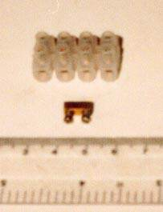
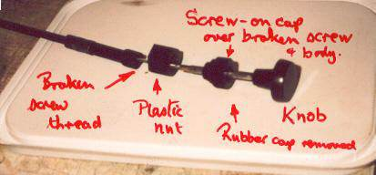
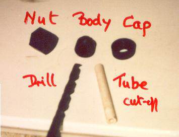

My RC17 arrived nearly four years ago with a seized shock adjuster – the cable had rusted into the outer after fraying. A replacement was about £30 GBP and I fixed it myself, making sure the cable was well oiled, the operating lever moved easily and the shock itself was well cleaned. Since then I have made sure to regularly move the adjuster knob in and out and apply oil under the rubber end cap, so I was highly unhappy to find the knob was having no effect when I recently removed the shock to replace its damping fluid. Careful viewing and lighting will allow you to check the action at the top of the shock without removing it.
The outer cable had come free from the end ferrule that is clamped to the shock body, hence it appeared the knob was doing its job, but in fact the only movement was the outer cable moving along the inner when the knob was pushed in, the lever remaining in High! The outer is only held by being crimped in the retainer ferrule, and recrimping did not work. Spending another £30 GBP on a poorly made item likely to fail again did not appeal, so I devised an alternative method of moving the adjusting lever on the shock that involves a push/pull rod on the LHS of the bike.

Picture of the completed adjuster
I found there is a straight line of sight to the lever from the left side of the bike, just behind the frame tube and above the bracket in front of the regulator/rectifier, and I could operate the lever with a long screwdriver. A rigid arm is all that is required to allow both push and pull, and that is what I made as follows.
With the shock out of the bike I cleaned it all up and generously oiled and greased the operating lever to make it as free-moving as possible. I cut the cable right through roughly in its middle leaving a good 400mm attached to the shock end eye attachment, released the end clamp at the shock and pulled the outer off of the remains of the attached inner cable. Then I swung the cable inner to the other side (pointing to the left side of the bike) to check clearances etc – I found no problems here.
My scrap box provided a plastic tube 6.5mm OD with a 2mm ID approx. 300mm long that I countersunk at one end to cap over the eye attachment on the end of the inner cable that attaches it to the shock lever. This makes the link between tube and lever more rigid. Check it is all OK because the next move is to take off the tube and reinstall the shock, feeding the cable through to the LHS position mentioned above. Refit the tube and check alignment and the length needed – do not cut anything yet.
The cable will be clamped against the end of the tube with the inside metal part from an electrical “chocolate block” connector – the smallest size available – probably a 5 amp rating – only about 10mm long after it is removed from the plastic insulating covering, with two screws to clamp onto the cable. I suppose a solderless nipple would do the job provided it cleared the rest of the knob as below.

Picture of electrical connector block and crimp
I made a knob out of the bits from the operator’s end of the original cable by pulling out the knob and the remaining cable, taking off the end rubber and using the screw-on cap, the plastic body it fits on and the plastic nut that tightens it all onto the frame bracket. On mine ham-fisted removal had broken the screw thread, but a complete one can be cut through. Dress up the cut thread to leave about 6mm of it on the body.

Annotated picture of the original damping adjuster cable
Use a 6.5 mm drill – or one the same size as the outer diameter of your tube – to make a recess (NOT a full hole right through) in the cap end of the body so that it fits tightly on the operating tube – check against a cut-off.

The parts you need to build the new adjuster rod, 12KBytes
Test-fit the cable clamp on the cable to see how much spare thread there is on its screws and carefully file them down to take up most of this – not all or you will not clamp the cable! This allows the clamp to fit inside the nut. Tighten these screws carefully because they are made in brass and strip or deform easily, and the whole system depends on them holding everything together.
Now assemble all the parts onto the tube; first the cap then the body with drilled recess facing the tube, and the clamp. Push it all together while pulling on the inner cable with pliers and tighten the clamp screws. Check the operation of the system and assess how much to shorten the tube – I set mine so the finished knob is just touching the frame tube on the IN position (which is the original OUT or HIGH). Strip it all off, cut the tube to length and reassemble as above. Now cut the cable so that it can be turned back on itself alongside the clamp and stop at the body piece. I wrapped up the clamp and cable in a bit of black insulating tape for neatness and finally screwed on the nut to make a knob about 20mm long and diameter. The final piece is a loose zip tie around the tube and frame to stop it all moving about and keep the alignment.
My original attempt was not so neatly finished at the end and stuck out further. I found I pushed it in with my right knee while taking the bike off the centre stand. I used a plastic tube that is just rigid enough to not flex much on the push action, a metal tube might be better but I did not have a piece to hand. I think the system should come out OK with the shock if it needs to be removed, but if not the knob nut can be undone and the clamp removed. The surplus bit of cable should make a rebuild possible.
So, money saved, a neat job and a benefit in being able to adjust the knob with your left hand while on the move. Just remember it works in reverse – OUT is LOW, IN is HIGH.